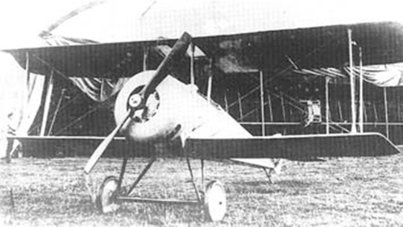

C - 20

- Разработчик: Сикорский
- Страна: Россия
- Первый полет: 1916
- Тип: Истребитель
Сикорский С-20 — это самолёт, разработанный в 1916 году. Он был предназначен для перевозки грузов и пассажиров на дальние расстояния. Самолёт имел схему четырёхстоечного биплана с нормальным хвостовым оперением и одной кабиной экипажа.
| Летно технические характеристики | |
|---|---|
| Модификация | С- 20 |
| Размах крыла, м | 8,20 |
| Длина, м | 6.50 |
| Высота, м | 2.56 |
| Площадь крыла, м2 | 17.00 |
| Масса, кг | |
| - пустого самолета | 395 |
| - нормальная взлетная | 570 |
| Тип двигателя | 1 ПД Rhone |
| Мощность, л.с. | 1 х 120 |
| Максимальная скорость , км/ч | 190 |
| Максимальная скороподъемность, м/мин | |
| Практический потолок, м | 7000 |
| Экипаж, чел | 1 |
| Вооружение: | один-два 7.7-мм пулемета Виккерс |